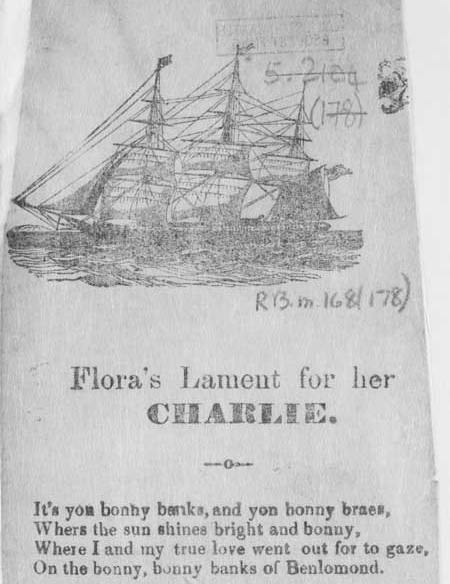

Flora's Lament for her Charlie
A broadside ballad after "Lochlomond" published in 1849
Tune( "Lochlomond" Sequenced by Christian Souchon)


|
FLORA'S LAMENT FOR HER CHARLIE.
1. It's yon bonny banks, and yon bonny braes, Where the sun shines bright and bonny, Where I and my true love went out for to gaze, On the bonny, bonny banks of Benlomond. It's you'll take the high road and I'll take the low And I'll be in Scotland before you, For I and my true love shall never meet again, On the bonny, bonny banks of Benlomond. 2. It's not for the hardships that I must endure, Nor the leaving of Benlomond; But it's for the leaving of my comrades all, And the bonny lad that I love so dearly, 3. With his bonny laced shoes and his buckles so clear, And his plaid o'er his shoulders hung so rarely ; One glance of his eye it would banish dull care, So handsome was the look's of my Charlie. 4. But as long as I live and as long as I breath, I will sing of his memory sourly; My true love was taken by the arrows of death, And now Flora does lament for her Charlie. Printed and sold Wholesale by Robert. McKntosh, Bookseller, Stationer, &c., 96 King St. Calton. A good variety always on hand. 24 page Histories, Song Books, House-Lets, Window Labels Remark: In fact the scene for a supposed romance between Flora and Charlie could hardly have been Ben Lomond Mount. Besides, when Charlie died in 1788, Flora, aged 66 by then, had been married for 38 years! |
FLORA PLEURE LE SORT DE CHARLIE.
1. C'est au pied de ces calmes et majestueux monts Que le jour pare de teintes vives, Que mon amoureux et moi souvent nous allions Contempler le Ben Lomond et ses rives. Toi, prends la haute route et moi le bas sentier, Qu'avant toi, je sois en Ecosse; Mais, bien-aimé, jamais je ne te reverrai Sur le Ben Lomond pour fêter nos noces. 2. Ce n'est pas l'épreuve qui cause mon chagrin, Ni ce mont qu'il faut que je laisse, Mais tous mes amis qui bientôt seront si loin Et celui pour qui j'ai tant de tendresse. 3. Les boucles et lacets de ses souliers vernis, La cape sur l'épaule pendante Et son regard clair bannissaient mes noirs soucis Tant Charlie était d'allure avenante. 4. Tant que je respirerai, tant que je vivrai, Ce sera pour lui que je chante. Toi que le funeste archer a pris à jamais, C'est pour toi, Charlie, que Flora se lamente. Impression et vente en gros chez Robert. McKintosh, Libraire, Papetier etc., 96 King St. à Calton. Grand choix en permanence d'histoires en 24 pages, de livres de chants, de littérature pour la maison, d'affiches pour les fenêtres. (Trad. Ch.Souchon (c) 2006)
Remarque: En réalité, la scène de l'idylle supposée entre Flora et Charlie n'aurait sans doute pas pu être le Ben Lomond et à la mort de Charlie, en 1788, Flora, âgée de 66 ans était mariée depuis 38 ans!
|